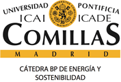

2007
2008
2009
2010
2011
2012
2013
Show Exergy Source Colors on Sankey
Zoom:
100%

Observatorio de la Energía en España
Spanish Exergy Sankey
Choose the sankey year on the left.
Zoom or drag nodes to rearrange.
Hold the mouse above sankey element for one second or more for more details.